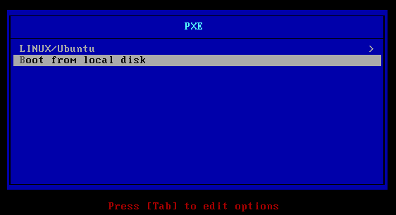

PXE 安装系统配置 Howto¶
@2013-08-21 新版功能: 创建
PXE 使用 DHCP 和 TFTP（简单文件传输协议）通过网络来引导操作系统。利用这个技术可以从网络接口 运行系统安装程序或启动系统（如无盘系统）。
通过 PXE 方式启动程序时 DHCP 服务器需要额外发送 TFTP 服务器的地址和 pxelinux.0 或 gpxelinux.0 文件的位置给目标计算机。PXELINUX 是 SYSLINUX 软件的一部分。gpxelinux.0（gPXE）相比 pxelinux.0 有一些额外的特性，如通过 HTTP, iSCSI, AoE 来引导系统。由于 TFTP 使用 UDP 作为传输协议，理论上， 在高负载网络上引导系统和传输大量数据时不使用 gPXE 时可能会遇到问题。 如果使用 gPXE，则只有 gpxelinux.0 二进制文件和配置文件将通过 TFTP 传输。 不过在实践上，在 ESXi 上的虚拟机上使用 gPXE 通过 HTTP 下载文件的速度反而很慢。
dhcpd 服务的配置如下：
# gPXE options
#option space gpxe;
#option gpxe-encap-opts code 175 = encapsulate gpxe;
#option gpxe.bus-id code 177 = string;
class "pxe" {
match if substring (option vendor-class-identifier, 0, 9) = "PXEClient";
filename "/gpxelinux.0";
}
subnet 10.0.0.0 netmask 255.255.255.0 {
authoritative;
range 10.0.0.200 10.0.0.220;
option domain-name-servers 10.0.0.2;
option routers 10.0.0.254;
}
其中 gPXE 相关的选项设置的作用待补充，在测试之中不需要这些选项也能正常工作。 另外，如果 tftp 服务器和 dhcp 服务器不是同一台机器的情况下，则需要相应的 配置 next-server 选项。
我们采用软件 tftp-hpa 来作为 tftp 服务器。配置 tftpd 启动参数为 "-R 4096:32767 -s /home/pxe/"。 从 syslinux 软件中拷贝 pxelinux.0 或 gpxelinux.0 文件到 /home/pxe/ 目录下。 如果需要用到 HTTP 方式的下载（如用到了 gPXE 或需要支持 Linux 系统的无人值守安装），则相应的需要配置 nginx （或其他WEB服务器）。
接下来需要编辑 PXE 的配置文件，配置完成后的目录结构如下：
.
|-- gpxelinux.0
|-- menu.c32
|-- pxelinux.cfg/
| `-- default
`-- ubuntu/
|-- 12.04/
|-- ks.cfg
`-- ubuntu.cfg
menu.c32 是引导加载程序，在 syslinux 软件中可以找到该文件。
pxelinuc.cfg 是 PXE 的配置文件所在目录。通过PXE引导系统时，配置文件的文件名 搜索顺序如下：
- 网络接口硬件类型和地址（字母小写），如，01-23-45-67-89-0a-bc。其中 01 对应以太网。
- 以十六进制（字母大写）表示的主机 IP 地址。
- default
例如，假设主机网卡为以太网，MAC 地址为 88:99:AA:BB:CC:DD，通过 DHCP 拿到的 IP 地址为 192.0.2.91，则配置文件的搜索顺序如下：
/pxelinux.cfg/01-88-99-aa-bb-cc-dd
/pxelinux.cfg/C000025B
/pxelinux.cfg/C000025
/pxelinux.cfg/C00002
/pxelinux.cfg/C0000
/pxelinux.cfg/C000
/pxelinux.cfg/C00
/pxelinux.cfg/C0
/pxelinux.cfg/C
/pxelinux.cfg/default
了解这个特性后，我们可以针对指定的主机进行个性化的配置。
pxelinux.cfg/default 文件的内容如下：
DEFAULT menu.c32
MENU TITLE PXE
INCLUDE ubuntu/ubuntu.cfg
LABEL localboot
LOCALBOOT 0x80
MENU LABEL ^Boot from local disk
ububtu/ububtu.cfg 文件的内容如下：
MENU BEGIN
MENU TITLE LINUX/Ubuntu
LABEL Ubuntu/12.04
MENU LABEL Ububtu/12.04
MENU INDENT 1
KERNEL menu.c32
KERNEL ubuntu/12.04/install/netboot/ubuntu-installer/amd64/linux
APPEND vga=normal initrd=ubuntu/12.04/install/netboot/ubuntu-installer/amd64/initrd.gz ks=http://a.b.c.d/ubuntu/ks.cfg --
MENU SEPARATOR
LABEL return
MENU LABEL ^Esc - Return to Main Menu
MENU INDENT 1
MENU EXIT
MENU END
ububtu/ks.cfg 文件的内容如下：
install
url --url http://a.b.c.d/ubuntu/12.04/
ubuntu/12.04/ 对应 ububtu 的系统安装光盘，我们是直接通过 “mount -o loop” 将 ISO 文件挂载在该目录下。
下图是配置成功后的系统截图。
关于 ESXi， Ubuntu 等系统 PXE 安装的配置文件请参考相应的官方文档。